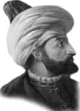

III. MURAT
Babası : II. Selim
Doğumu : 4 Temmuz 1546
Vefatı : 16 Ocak 1595
Saltanatı : 1574 - 1595 (21 yıl)
III. Murat, orta boylu, yuvarlak yüzlü, kumral sakallı, elâ gözlü ve beyaz tenli bir padişahtı. Çok cömertti, herkese yardım etmeyi severdi.
Zamanında gerçekleşen önemli olaylar: Venedik’le anlaşma yenilendi. Portekiz’le Vâdisseyl Muharebesi yapıldı ve Portekizliler kesin bir şekilde mağlup edildi. İspanya’ya karşı İngiltere’ye yardımlar yapıldı. Lehistan kralının tayininde çıkan mücadele kazanıldı ve 1577’de Lehistan devleti de Osmanlılara tâbi oldu. 1511’de Osmanlı tabiiyetinde bulunan Kırım Hanlığı Rusya’ya savaş ilân etti. Moskova’ya kadar ilerleyerek Rusya’yı vergiye bağladı. 1578’de İran’la savaşlar başladı. Çıldır Zaferi elde edildi, Tiflis ve Şirvan fethedildi. Hazar Denizi’ne kadar Osmanlı hâkimiyetine alındı. Tarihteki meşhur Tiflis Müdafaası yapıldı. Kaledeki bir avuç asker kedi ve köpeklere varıncaya kadar yiyerek kaleyi teslim etmediler. Yirmi yedi günde Kars Kalesi yapıldı. 1583’de Meşaleler Zaferi kazanıldı ve Revan fethedildi.
1585’de Tebriz IV. defa fethedildi. Gence şehri alındı. 1590’da İran’la barış yapıldı. 1593’de Almanya’ya savaş ilan edildi. 1594’de Yanıkkale fethedildi. Bu devirde Osmanlı topraklarının genişliği 19.902.000 km2’ye yükseldi. Osmanlı İmparatorluğu en geniş toprağa bu zamanda sahip bulunuyordu.
III. Murat 16 Ocak 1595’de kırk dokuz yaşında iken vefat etti. Ayasofya Camii avlusuna gömüldü. Beşiktaş’taki Yahya Efendi Türbesi’ni, Sultan Murat yaptırmıştı. Fethiye Camii’ni de kiliseden camiye o çevirtmişti.
Erkek çocukları: III. Mehmet, Selim, Beyazıt, Mustafa, Osman, Cihangir, Abdullah, Abdurrahman, Abdullah, Hasan, Ahmet, Yakub, Alemşah, Yusuf, Hüseyin, Korkut, Ali, İshak, Ömer, Alaaddin, Davud.
Kız çocukları: Ayşe, Fatma, Mihrimah, Fahriye.